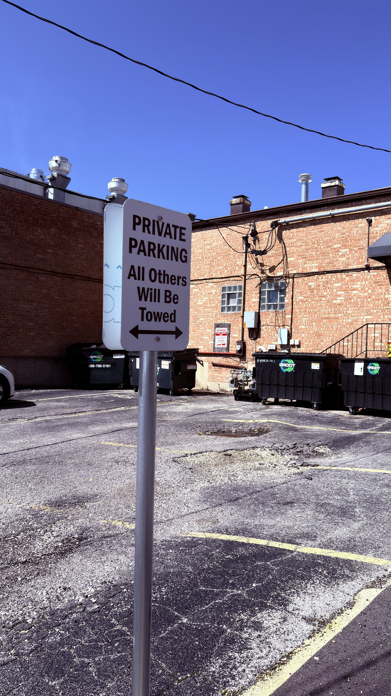

Downtown Naperville is not like other Chicagoland downtowns. You won’t find public places to enjoy your meal, like Hinsdale. Unlike Wheaton, the only public parks are those cramped, packed places along the Riverwalk. There’s no space to enjoy your walk along the city’s busiest commercial streets, like Arlington Heights. We believe that Naperville is a downtown built only for those eager to fail to find parking, drive around for a quarter of an hour, run into a store for five minutes, and leave.

When the Wisconsin Economic Development Corporation, a public-private agency established by the state, identified characteristics of a thriving downtown, they listed ten. By our count, Naperville fulfills one of these characteristics, the comparatively disused “at least one place suitable for wedding photos.” The rest of these characteristics describe walkable, livable downtowns, including “a public gathering place that’s accessible year-round with various seating options”, and “public restrooms and drinking fountains.”
Most of the characteristics described by the article describe a downtown that is enjoyable to those who are there to do something other than shop inside for their entire visit. We believe that Downtown Naperville desperately needs to open up to public, green, and easy-to-access spaces to make the downtown livable and walkable. People want to enjoy Naperville, not spend the least amount of time possible Downtown. The City can do this without completely renovating the entire downtown by closing off parts of streets for parts of the year, especially when it is nice outside, and by improving access to smaller green spaces like street corners.
The City’s own Downtown2030 plan shows a vision for a downtown that has a few outside green spaces, such as a currently nonexistent “urban plaza” at the corner of Van Buren Avenue and Main Street where a parking lot is today. We urge the city to implement these plans and more. The City’s current plan, which clearly is not a guiding light anyway, is not adequate for the Downtown’s future development.
Overall, we believe that the City of Naperville needs to expand its current plans to include spaces that are similar to other suburban downtowns like Wheaton, including a number of green spaces and blocked-off streets during the summer months. These plans would allow those who want to enjoy the downtown area to do so beyond their current limitations of shopping and dashing.